Introduction
Avant d'avoir fini le Mode Maximum, sur les 5 derniers niveaux, en plus de se dresser face à vous la combinaison des personnages les plus puissants du jeu, il y a également 3 équipes composées d'uniquement 1 seul combattant par équipe:
Il s'agit de :
Ce sont des Super Boss, des boss qui sont bien plus forts que la normale et qui mettront vos réflexes et vos capacités à l'épreuve.
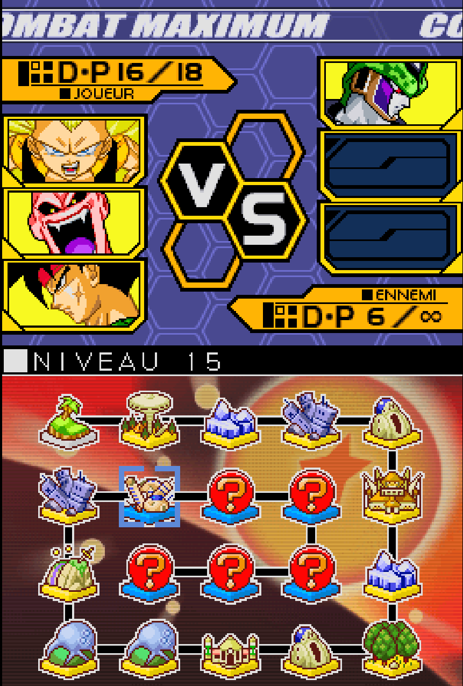
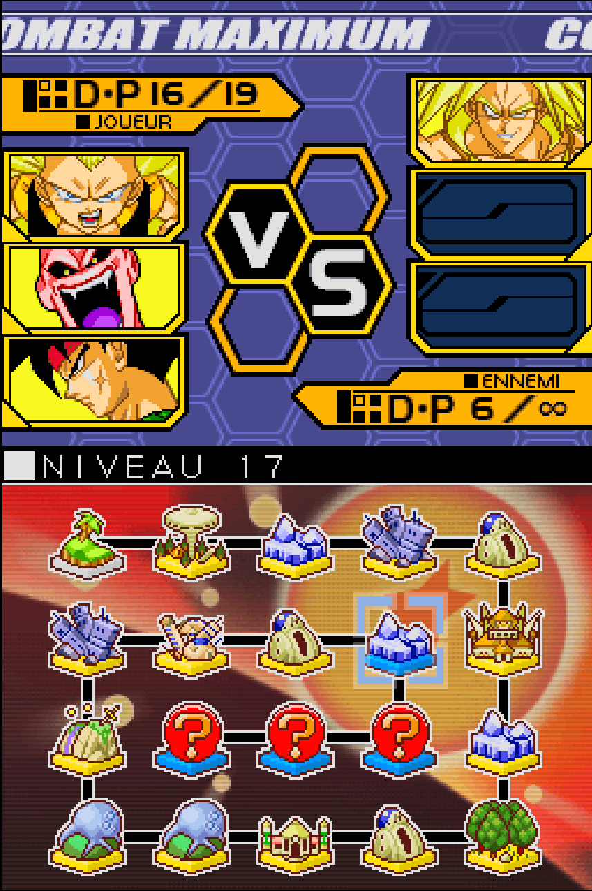
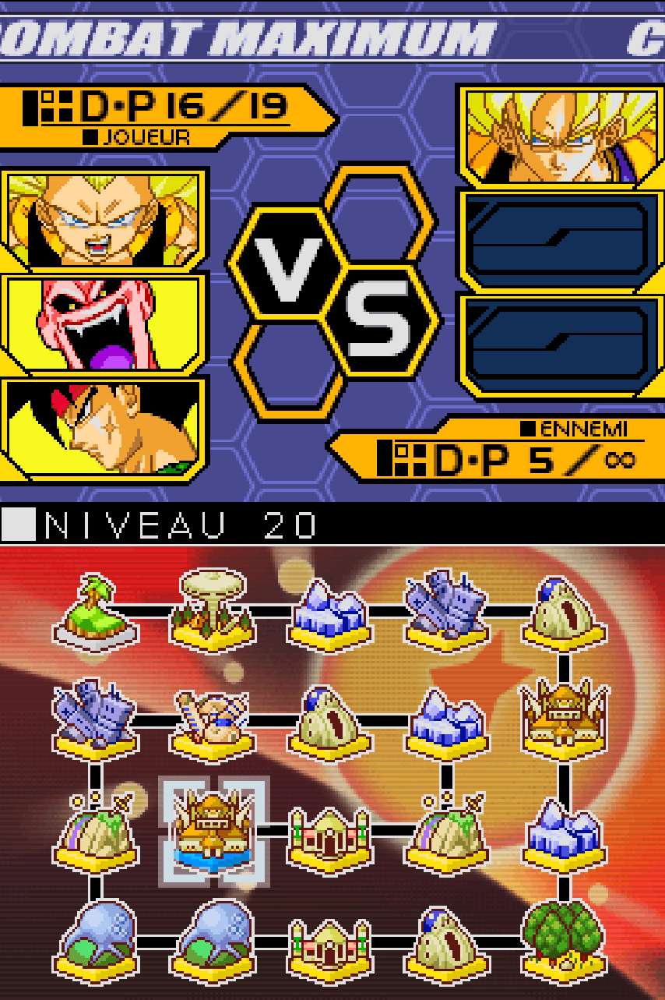
Comment fonctionnent les Super Boss ?
En général, les Super Boss ont plusieurs caractérisitiques en communs :
Avant de voir comment les vaincre et avec quelles équipes, il faudra d'abord savoir comment ils fonctionnent et quelle stratégie de base est à utiliseé contre eux. Pour ma part j'ai tout fait avec une seule team que je détaillerai ci-dessous.
Comment fonctionne Cell ?
Le Super Boss Cell possède en plus des caractérisitiques citées plus haut:
Comment le vaincre ?
Vous aurez ici les quelques conseils nécessaires pour survivre :
Pour illustrer tout ceci voici le Gameplay contre le Boss :
Comment fonctionne Broly ?
Le Super Boss Broly possède en plus des caractérisitiques citées plus haut:
Comment le vaincre ?
Vous aurez ici les quelques conseils nécessaires pour survivre :
Pour illustrer tout ceci voici le Gameplay contre le Boss avec cette fois-ci une vidéo avec et sans défaite :
Comment fonctionne Goku ?
Le Super Boss Cell possède en plus des caractérisitiques citées plus haut:
Comment le vaincre ?
Vous aurez ici les quelques conseils nécessaires pour survivre :
Pour illustrer tout ceci voici le Gameplay très serré contre le Boss :
L'équipe nécessaire pour réussir
Malgré le fait qu'on pourrait essayer de prendre plusieurs équipes pour gagner, one ne possède qu'une seule équipe pouvant gagner à coup sur contre eux, mais si vous souhaitée d'autres équipes, je vous conseille ses 3 équipes qui peuvent essayer de faire quelque chose:
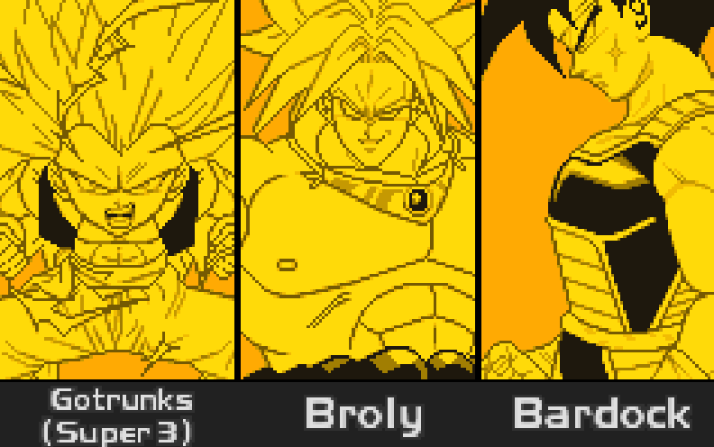
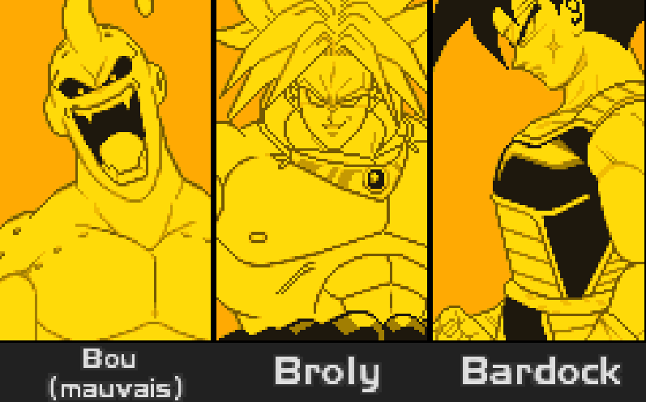


Voici sans doute la meilleure équipe pre-victoire sur le Mode Maximum, pouvant vaincre les 3 Boss, sans trop suer, cette équipe est composée des meilleurs personnages du jeu :
Les raisons pour cette équipe sont :
Pour la stratégie a adoptée, passons en revue les qualités des personnages et voyons ce que l'on peut faire avec :
Gotenks Super Saiyan 3 est un personnage qui a des spéciaux impressionants, son Attaque du Sanglier permet de foncer sur l'adversaire et de passer outre certaines attaques, son Beignet Galactique est une charge qui en plus d'aller vite, fait super mal et permet d'être au dessus de l'adversaire à la fin de l'attaque pour enfin parler de l'attaque qui est sans doute la plus puissante du jeu: les SGKA ou les Super Ghost Kamikaze Attack qui sont en fait plusieurs fantômes explosifs lancés sur l'adversaire. Sa capacité permet de le bosster encore plus.
Boo (Mauvais) est également un personnage surpuissant qui possède des attaques spéciales incroyables: Il a la Plongée Furieuse qui est une projection quasiment inévitable si tu n'esquives pas ou si tu lui fais pas subir des dégâts avant, il plongera sur toi et te feras des dégâts, c'est parfait pour briser la garde de l'ennemi ou pour approcher un personnage trop compliqué à attaquer. Il a également la Pluie Offensive qui permet d'empêcher les adversaires de s'approcher et possède une excellente portée verticale, enfin son Brise Zex est l'une des meilleures attaques possibles, il projette de l'électricité qui immobilise l'ennemi et ce dernier ne peut rien. Tout comme Gotenks, il possède une capacité qui est très intéressante, lors de son activation, la jauge de défense augmentera, ce qui pourra briser plus facilement la garde de l'ennemi et donc le frapper.
Bardock est un personnage support excellent pour uniquement 2 DP , son but est de rechargé le Ki à 200 instantanément.
Pour cette équipe là, la stratégie sera différente de d'habitude car étant face à 3 Super Boss qui ont bien plus d'armes face à vous, il faudra jouer différemment :
Le but ici sera de survivre et de ne pas mourir trop vite, de pouvoir esquiver un maximum et d'attaquer au bon moment
Pour Gotenks, n'hésitez pas à abuser de vos spéciaux pour mettre la pression et garder le rythme, grâce à votre vitesse vous pouvez vous déplacer très vite partout sur le terrain, pour pouvoir bien attaquer utilisez le combo attaque spéciale haute puis attaque spéciale basse ou juste un enchaînement d'attaque spéciale haute. Pour les dégâts normaux, faites des attaques sprintés, c'est le mieux à faire, car au vu de la vitesse des boss, on aura que peu de choix.
Pour Boo, ce sera la même chose que pour Gotenks, sauf que Boo (Mauvais) pourra compter sur son Brise Zex qui pourra être cumulable et immobolisera l'adversaire tout au long de l'affrontement, en plus d'aller super loin, il pourra le combiner à son propre corps-à-corps qui fait très mal, ce qui in fine pourra faire descendre la barre de vie du boss. On peut aussi compter sur son attaque spéciale standart, la Plongée Furieuse qui pourra passer à travers la garde, qui va plutôt vite et surtout peut aller dans un angle de vue assez intéressant pour duper le boss. Si les dégâts de Boo ne sont pas suffisante, il possède une capacité qui à chaque attaque portée, augmente la jauge de garde, soit le risque que la garde soit brisée et donc la possibilité de faire encore plus mal, mais face aux boss, il y a peu de chance que ça puisse s'activer car le temps de réaction des boss est inhumain et ils ne mettent quasiment jamais la garde.
Enfin pour Bardock, activez le autant de fois que nécessaire pour avoir du ki, mais ne l'activez uniquement quand votre ki est inférieur ou égal à 50.
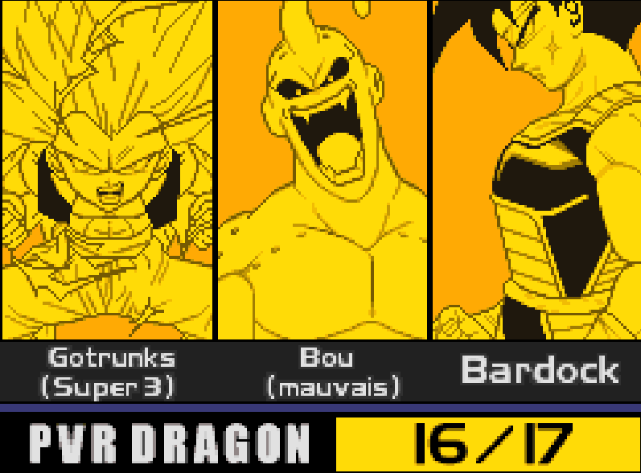
Les équipes possibles pour réussir
On partira désormais du principe que vous avez réussi une première fois à réussir les Boss, mais maintenant on fera des équipes de manière à réussir sans problème les 3 Boss.
Vu que face à ces Boss, le choix de personnage résistant est fortement limitée, il faudra s'inspirer de l'équipe précédente pour pouvoir avoir une chance de gagner, il y aura plusieurs variantes de la première équipe, mais finalement elles auront chacune quelque chose de différent :
Il y aura même une équipe que je considère comme l'une des plus fortes dedans, qui fait partie de l'avant dernier combat avant Goku, vous la reconnaîtrez lors de la présentation.
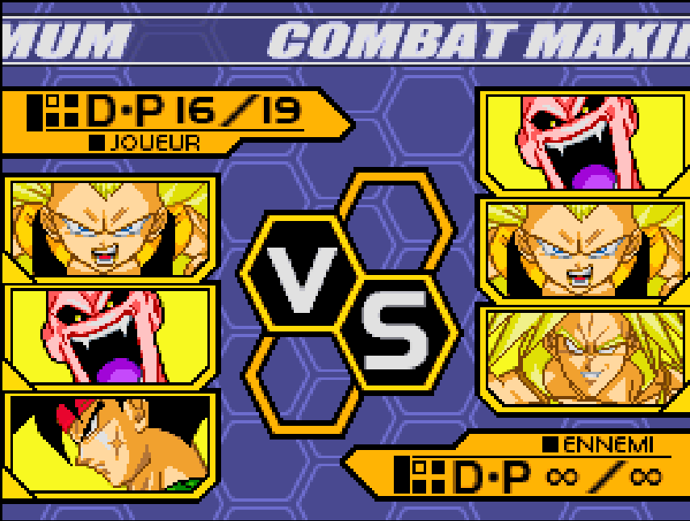
Les variantes de l'équipe sont les suivantes :
Bien évidemment vous pouvez faire des mixtes des personnages et créer d'autres équipes dans tous les cas les personnages choisis, retenus sont :
Les raisons pour ces équipes sont :
Passons en revue les qualités des personnages et voyons ce que l'on peut faire avec :
Gotenks Super Saiyan 3 est un personnage qui a des spéciaux impressionants, son Attaque du Sanglier permet de foncer sur l'adversaire et de passer outre certaines attaques, son Beignet Galactique est une charge qui en plus d'aller vite, fait super mal et permet d'être au dessus de l'adversaire à la fin de l'attaque pour enfin parler de l'attaque qui est sans doute la plus puissante du jeu: les SGKA ou les Super Ghost Kamikaze Attack qui sont en fait plusieurs fantômes explosifs lancés sur l'adversaire. Sa capacité permet de le bosster encore plus.
Boo (Mauvais) est également un personnage surpuissant qui possède des attaques spéciales incroyables: Il a la Plongée Furieuse qui est une projection quasiment inévitable si tu n'esquives pas ou si tu lui fais pas subir des dégâts avant, il plongera sur toi et te feras des dégâts, c'est parfait pour briser la garde de l'ennemi ou pour approcher un personnage trop compliqué à attaquer. Il a également la Pluie Offensive qui permet d'empêcher les adversaires de s'approcher et possède une excellente portée verticale, enfin son Brise Zex est l'une des meilleures attaques possibles, il projette de l'électricité qui immobilise l'ennemi et ce dernier ne peut rien. Tout comme Gotenks, il possède une capacité qui est très intéressante, lors de son activation, la jauge de défense augmentera, ce qui pourra briser plus facilement la garde de l'ennemi et donc le frapper.
Au niveau de Broly, on peut toujours rappeler qu'il a des attaques spéciales qui font des dégâts titanesques comme avec sa Coque explosive qui est une attaque Spéciale qui est lancé sur l'ennemi et qui en plus de lui faire super mal, lui fait du recul et l'immbolise durant un instant, son Geyser Planétaire est une immense colonne d'énergie qui fait remonté l'ennemi, lui fait mal et en plus Broly peut l'enchaîner durant l'attaque tout en étant invincible et enfin son Pic Géant et une projection qui bascule l'ennemi vers le sol et le renvoit au dessus de Broly qui peut enchaîner avec n'importe quoi. Sa capacité est là pour encore plus lui faire augmenter ses dégâts, quand il y a Son Goku en face, il frappe beaucoup plus fort, ce qui littéralement mettre KO après quelques coups, n'importe quel personnage non boss du jeu.
Quant à Gohan Super Saiyan 2, il frappe très fort, très rapidement et possède des attaques spéciales qui font aussi mal que Cell, mais elles ont un usage différent: son Kamehameha est aussi puissant que celui de Goku en Super Saiyan, si ce n'est plus, il garde le même usage et les mêmes caractéristiques, son Masenretsudan n'est pas fait pour faire des dégâts mais pour embêter l'adversaire, le tenir à distance et enfin son Magekidan est fort utile pout faire de gros dégâts et éloigner les adversaires s'approchant par le haut, cette attaque a une portée verticale immense et fait des dégâts sur l'entièreté de l'attaque. Sa capacité est plutôt utile quand il y a un deuxième combattant, elle s'activera uniquement si un allié est mit KO et que Gohan arrive sur le terrain, cela lui augmentera son attaque.
Pour Majin Vegeta, il frappe très fort, très rapidement zt possède surtout des attaques spéciales qui font plus mal que Cell ou Broly, également elles ont des usages divers: son Explosion atomique est une attaque ayant deux formes, la première est un énorme projectile, qui se sépare ensuite en 5 lames d'énergies, la première partie servira à faire des gros dégâts sur un seul endroit et la deuxième servira à garder la distance et empêcher la personne d'approcher sous plusieurs angles. Son Explosion météore est une sorte de fusion entre l'attaque spéciale haute de Piccolo ou Cell 2e Forme et l'attaque spéciale basse de Gohan Super Saiyan 2, en quelque sorte c'est une gigantesque décharge d'énergie prenant quasiment toute la map à la verticale, qui fait mal et peut empêcher l'ennemi de bouger longtemps et enfin son Blaster final est fort utile pout faire de gros dégâts et éloigner les adversaires s'approchant par le haut, cette attaque ressemble à celle de Metal Cooler mais vers le bas, également, elle peut s'adapter si l'adversaire par sur les côtés. Sa capacité est plutôt parfaite face à Goku (par exemple le Super Boss) qui le boostera en attaque si elle s'activera.
Bardock est un personnage support excellent pour uniquement 2 DP , son but est de rechargé le Ki à 200 instantanément.
Pour ces équipes, on va appliquer quasiment la même stratégie mais en s'adaptant aux boss :
Le but ici sera de survivre et tenir les dégâts tout en faisant le maximum pour en infliger en attaquant au bon moment
Pour Gotenks, n'hésitez pas à abuser de vos spéciaux pour mettre la pression et garder le rythme, grâce à votre vitesse vous pouvez vous déplacer très vite partout sur le terrain, pour pouvoir bien attaquer utilisez le combo attaque spéciale haute puis attaque spéciale basse ou juste un enchaînement d'attaque spéciale haute. Pour les dégâts normaux, faites des attaques sprintés, c'est le mieux à faire, car au vu de la vitesse des boss, on aura que peu de choix.
Pour Boo, ce sera la même chose que pour Gotenks, sauf que Boo (Mauvais) pourra compter sur son Brise Zex qui pourra être cumulable et immobolisera l'adversaire tout au long de l'affrontement, en plus d'aller super loin, il pourra le combiner à son propre corps-à-corps qui fait très mal, ce qui in fine pourra faire descendre la barre de vie du boss. On peut aussi compter sur son attaque spéciale standart, la Plongée Furieuse qui pourra passer à travers la garde, qui va plutôt vite et surtout peut aller dans un angle de vue assez intéressant pour duper le boss. Si les dégâts de Boo ne sont pas suffisante, il possède une capacité qui à chaque attaque portée, augmente la jauge de garde, soit le risque que la garde soit brisée et donc la possibilité de faire encore plus mal, mais face aux boss, il y a peu de chance que ça puisse s'activer car le temps de réaction des boss est inhumain et ils ne mettent quasiment jamais la garde.
Pour Gohan Super Saiyan 2, grâce à sa vitesse et ses attaques, ils seront bons pour occuper l'adversaire, mais la partie la plus intéressante, ce sera après avoir activé sa capacité, qui le fera augmenter en attaque après un KO, ce qui ne sera pas compliqué au vue de la violence des Boss. Avec ceci, il pourra faire des choses intéressantes et potentiellement vaincre un Boss, si vous attaquez au bon moment grâce à sa vitesse. C'est un personnage qui au milieu des autres, ne sera pas aussi violent mais sera utile pour des situations comme ça.
Pour Majin Vegeta et Broly, ce sera la même logique pour les deux, leur but sera d'activer leur compétence face à Goku et d'essayer de le détruire avec des coups, des attaques spéciales un maximum de temps, comme ça après s'ils arrivent à bien baisser les pv du Boss et lorsqu'eux aussi seront dans le rouge au niveau de la vie, ils activent leur attaque ultime qui sont parfaites car prenant une large zone et n'a pas vraiment besoin de direction sauf pour Vegeta (Mauvais), mais qui fera d'énormes dégats. Face aux autre boss, en dehors de Goku, ils tiendront le même rôle qui sera d'esquiver, attaquer et essayer de durer durant le combat.
Enfin pour Bardock, activez le autant de fois que nécessaire pour avoir du ki, mais ne l'activez uniquement quand votre ki est inférieur ou égal à 50.
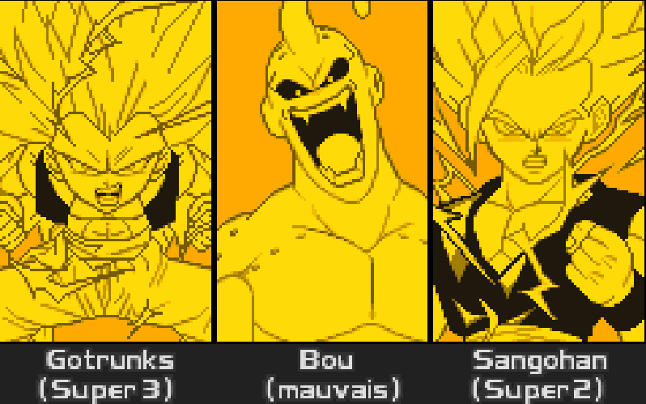
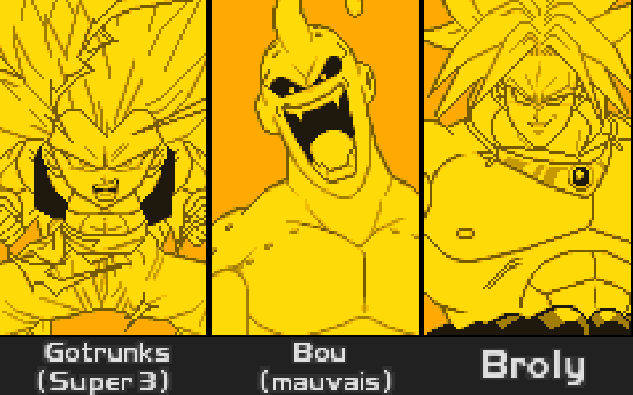
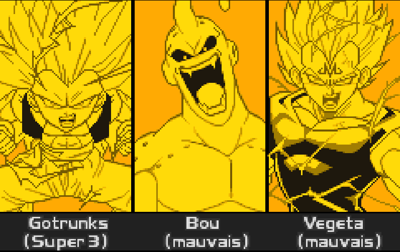
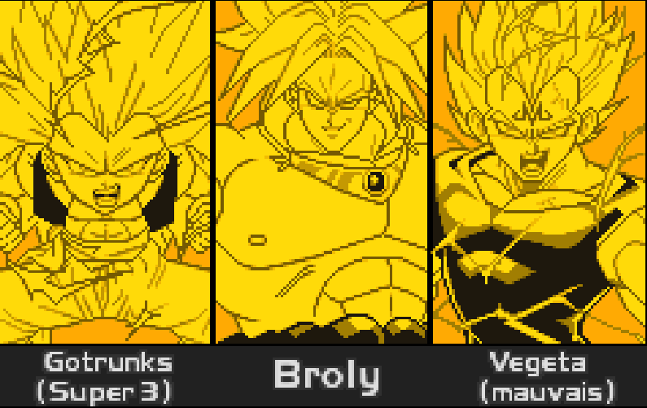
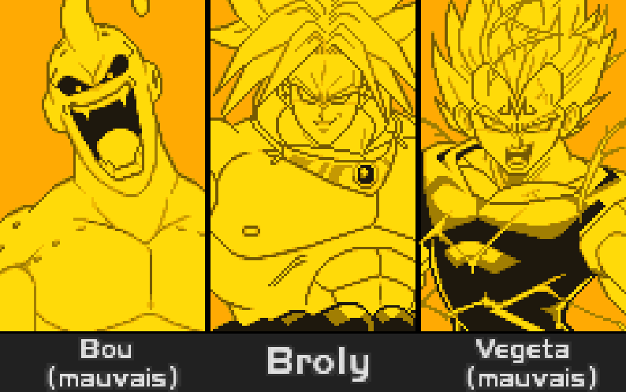